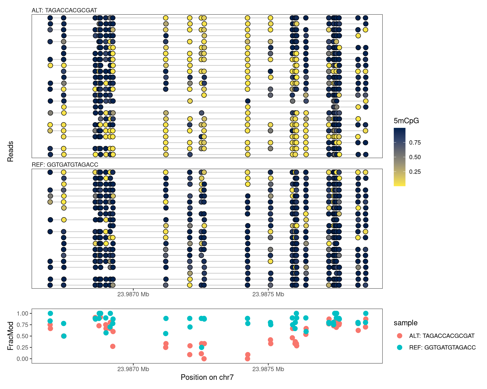

When reading data with footprintR, the reads will automatically be grouped by sample (i.e., the name assigned to each input files). As we have seen in earlier chapters, this is reflected by the columns of the SummarizedExperiment object generated by the reading functions corresponding to samples, with individual reads stored in a nested fashion within the samples. In practice, this means that any summary statistics, e.g. calculated by flattenReadLevelAssay, will be calculated by sample, and plotRegion will facet the reads by sample. In some situations, we may wish to group the reads by something other than the sample that they stem from. How to achieve this will be the focus of the current chapter.
7.1 Preparation
We first load the packages and the genome needed for these tasks.
One reason for regrouping reads could be to sort them using genetic variation (e.g., single nucleotide variants), e.g. with the purpose of studying allele-specific signals. Typically, the heterozygous loci on which we would like to base such read grouping are known in advance (alternatively, we can use all positions within a given genomic region). In such cases, readModBam can automatically add “sequence labels” (consisting of the observed nucleotide in the indicated positions) to reads when reading the data, and these labels can later be used to regroup the reads.
Let’s consider an example. We start by defining a region of interest, and reading a file with known heterozygous SNVs (for the purposes of this report, we have subset the complete VCF file to only SNVs overlapping the region of interest, but this is not necessary in general).
UnstitchedGPos object with 13 positions and 5 metadata columns:
seqnames pos strand | paramRangeID REF
<Rle> <integer> <Rle> | <factor> <DNAStringSet>
chr7:23986770_G/T chr7 23986770 * | NA G
chr7:23986885_G/A chr7 23986885 * | NA G
chr7:23987082_T/G chr7 23987082 * | NA T
chr7:23987109_G/A chr7 23987109 * | NA G
chr7:23987130_A/C chr7 23987130 * | NA A
... ... ... ... . ... ...
chr7:23987468_A/G chr7 23987468 * | NA A
chr7:23987586_G/C chr7 23987586 * | NA G
chr7:23987658_A/G chr7 23987658 * | NA A
chr7:23987665_C/A chr7 23987665 * | NA C
chr7:23987670_C/T chr7 23987670 * | NA C
ALT QUAL FILTER
<DNAStringSet> <numeric> <character>
chr7:23986770_G/T T 504.609 .
chr7:23986885_G/A A 485.725 .
chr7:23987082_T/G G 421.622 .
chr7:23987109_G/A A 420.142 .
chr7:23987130_A/C C 509.378 .
... ... ... ...
chr7:23987468_A/G G 480.559 .
chr7:23987586_G/C C 425.562 .
chr7:23987658_A/G G 336.694 .
chr7:23987665_C/A A 338.173 .
chr7:23987670_C/T T 372.650 .
-------
seqinfo: 61 sequences from an unspecified genome
We next generate “expected” REF and ALT sequences by concatenating the sequences of the heterozygous SNVs overlapping the region of interest. These sequences will later be used to group reads into one of two categories (REF or ALT), based on the agreement with the expected sequences. Note that with this approach, we’re making the implicit assumption that the SNVs are phased (and thus that a read will not typically harbor a mix of the REF and ALT nucleotides) - for most reads in our example this turns out to be a valid assumption, but in other cases other grouping schemes may be preferable.
Show/hide code
# subset to SNVs in region of interesthetpos1 <-subsetByOverlaps(hetpos, reg, ignore.strand =TRUE)(seqREF <-paste(as.character(hetpos1$REF), collapse =""))
Next, we generate two versions of the genome sequence, obtained by injecting, respectively, the REF and ALT nucleotide above into the corresponding positions. These genomes will later be used to generate sequence contexts for the positions seen in the data, and filter out positions that are not annotated as (in the case below) CpGs. For more information about filtering, and how it can reduce the effect of sequencing errors, see Chapter 3 and Chapter 4.
After this preparation, we read the data. In this case, we will work with a modBam file from a wild-type sample, for which 5mCpG modification calling has been performed. We specify the positions of the heterozygous SNVs to the variantPositions argument, which will generate a sequence label for each read.
Show/hide code
seC <-readModBam(bamfiles ="data/mESC_wt_5mCG_5hmCG_rep2.bam", regions = reg,modbase ="m", level ="read",variantPositions = hetpos1, trim =TRUE,BPPARAM = BiocParallel::SerialParam(),verbose =interactive())# derived sequence labelsseC$readInfo$s1$variant_label
Next, we filter the data by sequence context, to only retain positions annotated as CG in both the REF and ALT genomes generated above. We achieve this by sequentially adding the sequence context from each of the genomes, and filtering by this sequence context.
With the clean data, we next cluster the reads into two groups, based on which of the two expected sequences (seqREF or seqALT above) the respective sequence labels are most similar to. We request a Hamming distance of at most 0.34 based on the positions covered by the read - otherwise, the read is assigned to an NA category
Based on this read grouping, we can now regroup the reads in such a way that the columns of the SummarizedExperiment object corresponds to allele (REF or ALT) rather than the sample. This is achieved with the regroupReads function.
Show/hide code
# generate named list of read groupsmethGroupList <-split(names(varlabels), methGroup)# regroup readsseCgrouped <-regroupReads(seC, methGroupList)# calculate average modification fraction by alleleseCgrouped <-flattenReadLevelAssay(seCgrouped, keepReads =TRUE)# plotplotRegion(seCgrouped, region = reg,tracks =list(list(trackData ="mod_prob", trackType ="Lollipop",legendTitle ="5mCpG"),list(trackData ="FracMod", trackType ="Point",arglistPoint =list(size =3)))) +plot_layout(heights =c(7.5, 1.5))

Figure 7.1
In this example, we notice a clear difference in methylation between the two alleles.
7.3 Modification based
As an alternative to the genetic grouping used above, we could also group the reads based on the observed data. To exemplify this, we will look at a known imprinted locus in the Peg10 gene, split the reads based on the average CpG methylation in the locus, and compare the levels of 6mA modifications between the groups.
First, we read the CpG methylation data and filter positions to only retain those in a CpG context.
Next, we calculate the average modification fraction per read. We note a clear bimodality of the distribution, and define two groups of reads based on this.
Show/hide code
# calculate average modification fraction per readavgmod <-colMeans(as.matrix(assay(seC, "mod_prob")), na.rm =TRUE)ggplot(data.frame(avgmod = avgmod), aes(x = avgmod)) +geom_histogram() +labs(x ="Average modification probability per read (CpG)") +theme_bw(base_size =16)
`stat_bin()` using `bins = 30`. Pick better value with `binwidth`.
Next, we will illustrate how to use footprintR to create metaplots. In these plots, each row represents an (equally sized) genomic region. Here, we will exemplify this by generating a metaplot of a collection of 1,000 strong CTCF sites:
Next, we use the getAnchorRegions function to extract the FracMod values for each of the regions. Note that all regions must have the same size. Hence, we specify the midpoints of the regions as well as the desired size.
We can think of the FracMod assay in agg as similar to a read-level assay - each column corresponds to a sample, and is represented as an NaMatrix with each column corresponding to a region. Consequently, we can calculate additional summary assays, aggregating information across all regions, using flattenReadLevelAssay.
Finally, we use plotRegion to create the metaplot. We include both a heatmap where each row corresponds to a region, and a summary plot aggregating across regions.
# Grouping reads {#sec-grouping-reads}When reading data with [fmicompbio/footprintR]{.githubpkg}, the reads will automatically be grouped by _sample_ (i.e., the name assigned to each input files).As we have seen in earlier chapters, this is reflected by the columns of the `SummarizedExperiment` object generated by the reading functions corresponding to samples, with individual reads stored in a nested fashion within the samples. In practice, this means that any summary statistics, e.g. calculated by [flattenReadLevelAssay]{.fn}, will be calculated by sample, and [plotRegion]{.fn} will facet the reads by sample.In some situations, we may wish to group the reads by something other than the sample that they stem from. How to achieve this will be the focus of the current chapter. ## PreparationWe first load the packages and the genome needed for these tasks.```{r}#| message: false#| label: load-packagesBSgenomeName <-"BSgenome.Mmusculus.GENCODE.GRCm39.gencodeM34"library(footprintR)library(ggplot2)library(patchwork)library(GenomicRanges)library(SummarizedExperiment)library(BSgenomeName, character.only =TRUE)library(VariantAnnotation)library(stringdist)library(BiocParallel)# Load genomegnm <-get(BSgenomeName)genome(gnm) <-"mm39"```## Using sequence variation {#sec-group-by-sequence}One reason for regrouping reads could be to sort them using genetic variation (e.g., single nucleotide variants), e.g. with the purpose of studying allele-specific signals. Typically, the heterozygous loci on which we would like to base such read grouping are known in advance (alternatively, we can use all positions within a given genomic region).In such cases, [readModBam]{.fn} can automatically add "sequence labels" (consisting of the observed nucleotide in the indicated positions) to reads when reading the data, and these labels can later be used to regroup the reads. Let's consider an example. We start by defining a region of interest, and reading a file with known heterozygous SNVs (for the purposes of this report, we have subset the complete VCF file to only SNVs overlapping the region of interest, but this is not necessary in general). ```{r}#| label: load-snvsreg <-resize(as("chr7:23987184-23987363", "GRanges"), width =1300, fix ="center")hetsnv <-readVcf("data/het_snp_chr7_23987184-23987363.vcf.gz")hetpos <-as(rowRanges(hetsnv), "GPos")hetpos$ALT <-unlist(hetpos$ALT)hetpos```We next generate "expected" REF and ALT sequences by concatenating the sequences of the heterozygous SNVs overlapping the region of interest.These sequences will later be used to group reads into one of two categories (REF or ALT), based on the agreement with the expected sequences.Note that with this approach, we're making the implicit assumption that the SNVs are phased (and thus that a read will not typically harbor a mix of the REF and ALT nucleotides) - for most reads in our example this turns out to be a valid assumption, but in other cases other grouping schemes may be preferable.```{r}#| label: subset-snvs# subset to SNVs in region of interesthetpos1 <-subsetByOverlaps(hetpos, reg, ignore.strand =TRUE)(seqREF <-paste(as.character(hetpos1$REF), collapse =""))(seqALT <-paste(as.character(hetpos1$ALT), collapse =""))```Next, we generate two versions of the genome sequence, obtained by injecting, respectively, the REF and ALT nucleotide above into the corresponding positions. These genomes will later be used to generate sequence contexts for the positions seen in the data, and filter out positions that are not annotated as (in the case below) CpGs. For more information about filtering, and how it can reduce the effect of sequencing errors, see @sec-qc-filtering and @sec-visualize-regions.```{r}#| label: inject-snpsgnmREF <- gnmALT <-getSeq(gnm)for (chr innames(gnmREF)) { i <-which(seqnames(hetpos) == chr) gnmREF[[chr]] <-replaceLetterAt(x = gnmREF[[chr]],at =start(hetpos)[i],letter =unlist(hetpos$REF[i]),verbose =interactive()) gnmALT[[chr]] <-replaceLetterAt(x = gnmALT[[chr]],at =start(hetpos)[i],letter =unlist(hetpos$ALT[i]),verbose =interactive())}```After this preparation, we read the data. In this case, we will work with a `modBam` file from a wild-type sample, for which 5mCpG modification calling has been performed.We specify the positions of the heterozygous SNVs to the `variantPositions` argument, which will generate a sequence label for each read.```{r}#| label: read-dataseC <-readModBam(bamfiles ="data/mESC_wt_5mCG_5hmCG_rep2.bam", regions = reg,modbase ="m", level ="read",variantPositions = hetpos1, trim =TRUE,BPPARAM = BiocParallel::SerialParam(),verbose =interactive())# derived sequence labelsseC$readInfo$s1$variant_label```Next, we filter the data by sequence context, to only retain positions annotated as `CG` in both the REF and ALT genomes generated above. We achieve this by sequentially adding the sequence context from each of the genomes, and filtering by this sequence context.```{r}#| label: add-seq-context-filter# REF genomeseC <-addSeqContext(x = seC, sequenceContextWidth =3,sequenceReference = gnmREF)seC <-filterPositions(seC, filters ="sequenceContext",sequenceContext ="NCG", assayNameNA ="mod_prob")# ALT genomeseC <-addSeqContext(x = seC, sequenceContextWidth =3,sequenceReference = gnmALT)seC <-filterPositions(seC, filters ="sequenceContext",sequenceContext ="NCG", assayNameNA ="mod_prob")```With the clean data, we next cluster the reads into two groups, based on which of the two expected sequences (`seqREF` or `seqALT` above) the respective sequence labels are most similar to. We request a Hamming distance of at most 0.34 based on the positions covered by the read - otherwise, the read is assigned to an `NA` category```{r}#| label: classify-reads(varlabels <-structure(unlist(lapply(seC$readInfo, "[[", "variant_label"), use.names =FALSE),names =unlist(lapply(seC$readInfo, rownames), use.names =FALSE)))dists <-stringdistmatrix(a =c(seqREF, seqALT),b = varlabels, method ="hamming",nthread =2) /nchar(varlabels[1])methGroup <-ifelse(colMins(dists) <0.34,paste0(c("REF", "ALT"), ": ", c(seqREF, seqALT))[apply(dists, 2, which.min)], NA)table(methGroup, useNA ="ifany")```Based on this read grouping, we can now regroup the reads in such a way that the columns of the `SummarizedExperiment` object corresponds to allele (REF or ALT) rather than the sample.This is achieved with the [regroupReads]{.fn} function.```{r}#| fig.width: 10#| fig.height: 8#| label: fig-regroup-reads-snvs# generate named list of read groupsmethGroupList <-split(names(varlabels), methGroup)# regroup readsseCgrouped <-regroupReads(seC, methGroupList)# calculate average modification fraction by alleleseCgrouped <-flattenReadLevelAssay(seCgrouped, keepReads =TRUE)# plotplotRegion(seCgrouped, region = reg,tracks =list(list(trackData ="mod_prob", trackType ="Lollipop",legendTitle ="5mCpG"),list(trackData ="FracMod", trackType ="Point",arglistPoint =list(size =3)))) +plot_layout(heights =c(7.5, 1.5))```In this example, we notice a clear difference in methylation between the two alleles.## Modification basedAs an alternative to the genetic grouping used above, we could also group the reads based on the observed data. To exemplify this, we will look at a known imprinted locus in the Peg10 gene, split the reads based on the average CpG methylation in the locus, and compare the levels of 6mA modifications between the groups. First, we read the CpG methylation data and filter positions to only retain those in a CpG context.```{r}#| label: read-data-5mcpgpeg10 <-as("chr6:4746792-4748791", "GRanges")seC <-readModBam(bamfiles ="data/mESC_wt_5mCG_5hmCG_rep2.bam", regions = peg10,modbase ="m", sequenceReference = gnm,sequenceContextWidth =3,seqinfo =seqinfo(gnm),trim =TRUE,BPPARAM = BiocParallel::SerialParam(),verbose =interactive())seC <-filterPositions( seC, filters ="sequenceContext",sequenceContext ="NCG")```Next, we calculate the average modification fraction per read. We note a clear bimodality of the distribution, and define two groups of reads based on this.```{r}#| label: fig-classify-reads-5mcpg# calculate average modification fraction per readavgmod <-colMeans(as.matrix(assay(seC, "mod_prob")), na.rm =TRUE)ggplot(data.frame(avgmod = avgmod), aes(x = avgmod)) +geom_histogram() +labs(x ="Average modification probability per read (CpG)") +theme_bw(base_size =16)read_groups <-split(colnames(as.matrix(assay(seC, "mod_prob"))), c("paternal", "maternal")[(avgmod >0.5) +1])```Next, we read the 6mA data for the same sample, filter by sequence context and regroup the reads based on the split defined above.```{r}#| label: read-data-6maseA <-readModBam(bamfiles ="data/mESC_wt_6mA_rep2.bam", regions = peg10,modbase ="a", sequenceReference = gnm,sequenceContextWidth =1,seqinfo =seqinfo(gnm),trim =TRUE,BPPARAM = BiocParallel::SerialParam(),verbose =interactive())seA <-filterPositions( seA, filters ="sequenceContext",sequenceContext ="A")seA <-regroupReads(seA, readGroups = read_groups)# check that the columns of seA now correspond to read groupscolnames(seA)```With the new read grouping, we next calculate summary statistics and visualize the 6mA data.```{r}#| fig.height: 7#| fig.width: 7#| label: fig-regrouped-reads-5mcpgseA <-flattenReadLevelAssay(seA)plotRegion(seA, region = peg10, sequenceContext ="A", tracks =list(list(trackType ="Heatmap", trackData ="mod_prob", interpolate =TRUE, legendTitle ="6mA", orderReads ="squish"),list(trackType ="Smooth", trackData ="FracMod"))) +plot_layout(heights =c(3, 1))```## Across different regionsNext, we will illustrate how to use [fmicompbio/footprintR]{.githubpkg} to create metaplots. In these plots, each row represents an (equally sized) genomic region. Here, we will exemplify this by generating a metaplot of a collection of 1,000 strong CTCF sites:```{r}#| label: load-ctcf-sites(ctcf_sites <-readRDS("data/ctcf_sites_1000.rds"))```We first load summary-level data from all reads overlapping 1.5kb regions centered on these sites, and filter positions based on the sequence context. ```{r}#| label: read-data-ctcfse <-readModBam(bamfiles ="data/mESC_wt_6mA_rep1.bam",regions =resize(ctcf_sites, width =1500, fix ="center"),modbase ="a",level ="summary",trim =TRUE,seqinfo =seqinfo(gnm),sequenceContextWidth =1,sequenceReference = gnm,verbose =interactive())se <-filterPositions(se, filters ="sequenceContext",sequenceContext ="A",assayNameNA =NULL)```Next, we use the [getAnchorRegions]{.fn} function to extract the FracMod values for each of the regions.Note that all regions must have the same size.Hence, we specify the midpoints of the regions as well as the desired size. ```{r}#| label: get-anchor-regions-ctcfagg <-getAnchorRegions(se, assayName ="FracMod",regionMidpoints =as(resize(ctcf_sites, width =1, fix ="center"), "GPos"),regionWidth =1501,reverseMinusStrandRegions =TRUE,verbose =interactive())```In the resulting object, the positions are represented on the 'anchor' reference sequence, with positions ranging from -750 to +750. ```{r}#| label: show-anchor-seagg```We can think of the `FracMod` assay in `agg` as similar to a read-level assay - each column corresponds to a sample, and is represented as an `NaMatrix` with each column corresponding to a region. Consequently, we can calculate additional summary assays, aggregating information across all regions, using [flattenReadLevelAssay]{.fn}.```{r}#| label: flatten-anchor-seagg <-flattenReadLevelAssay(agg, assayName ="FracMod", statistics ="Pmod")```Finally, we use [plotRegion]{.fn} to create the metaplot. We include both a heatmap where each row corresponds to a region, and a summary plot aggregating across regions.```{r}#| fig.height: 8#| label: fig-anchored-ctcfplotRegion(agg, region =as("anchor:-750-750", "GRanges"), tracks =list(list(trackData ="FracMod", trackType ="Heatmap",interpolate =TRUE),list(trackData ="Pmod", trackType ="Smooth"))) + patchwork::plot_layout(heights =c(3, 1))```## Session info<details><summary><b>Click to view session info</b></summary>```{r}#| label: session-infosessioninfo::session_info(info ="packages")```</details>